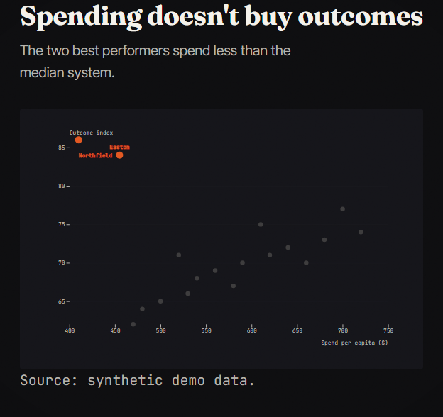
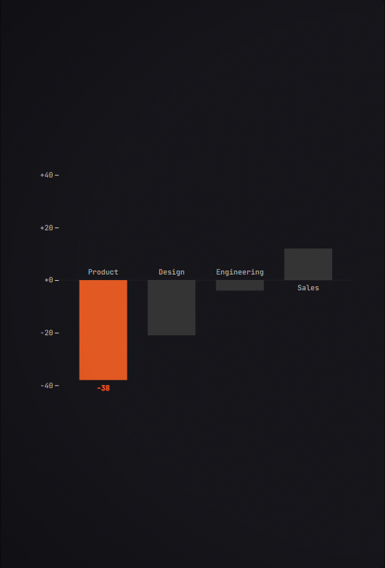
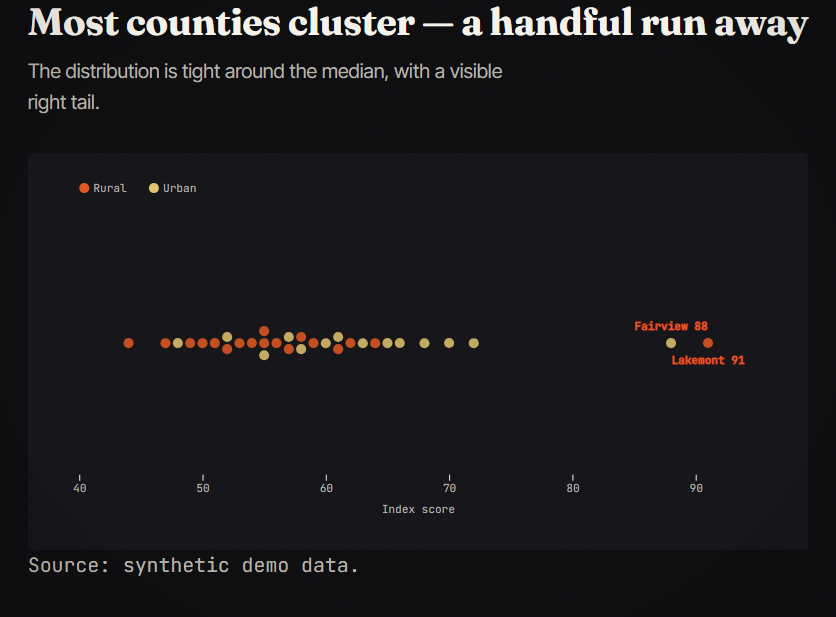
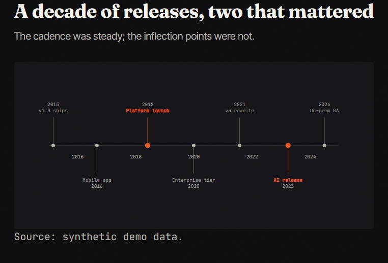
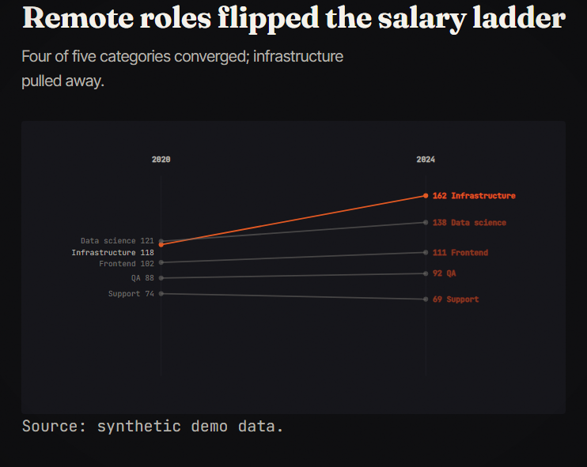
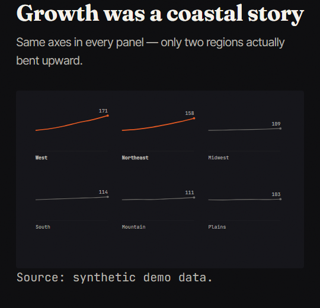

{kind=link}

annotated-scatter simple
An x/y scatter where the points that matter are named and the rest fade back.
dstory scene my-story scene-x --from annotated-scatter
{kind=link}

bar-steps scrolly
A sticky bar chart where each scroll step spotlights a different bar.
dstory scene my-story scene-x --from bar-steps
{kind=link}

beeswarm simple
Every data point visible — a distribution along one axis, optionally colored by group.
dstory scene my-story scene-x --from beeswarm

bump-chart simple
Rank over time — who overtook whom, with end labels and a highlight set.
dstory scene my-story scene-x --from bump-chart
{kind=link}

dot-timeline simple
Events on a time axis with alternating stems — the shape of a history at a glance.
dstory scene my-story scene-x --from dot-timeline

line-reveal simple
A line chart that draws itself in, with direct end-labeling and an optional annotation.
dstory scene my-story scene-x --from line-reveal

range-dots simple
Dumbbell rows — a before→after range per category, sorted by change.
dstory scene my-story scene-x --from range-dots
{kind=link}

slope-chart simple
Two-period comparison — what rose, what fell, and by how much, with direct labels.
dstory scene my-story scene-x --from slope-chart
{kind=link}

small-multiples simple
One mini line chart per series, shared scales — comparison without spaghetti.
dstory scene my-story scene-x --from small-multiples

waffle simple
Part-of-whole as a 10×10 grid — percentages people can count.
dstory scene my-story scene-x --from waffle